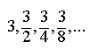
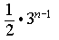
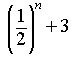
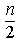
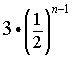
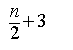

Item: tExplicitGeometric3a
Stem:
The first four terms of a geometric sequence are given below.
Choose the algebraic expression that represents the nth term in this sequence.






Key:
- Observable: 1.
Score: 0;
Evidence Value: 0.
-
Student:Sorry, that's incorrect. Consider the case where n = 1. Then the expression you selected evaluates to 1/2(3n-1) = 1/2(31-1) = 1/2. But the first term is equal to 3, not 1/2, so this cannot be the correct expression to describe the sequence.
-
Teacher:The student may have misremembered the formula for finding the nth term of a geometric sequence. The student should be encouraged to verify expressions by substituting numbers from the problem.
- Observable: 2.
Score: 0;
Evidence Value: 0.
-
Student:Sorry, that's incorrect. Consider the case where n = 1. Then the expression you selected evaluates to 1/2n + 3 = 1/21 + 3 = 3.5. But the first term is equal to 3, not 3.5, so this cannot be the correct expression to describe the sequence.
-
Teacher:The student may have misremembered the formula for finding the nth term of a geometric sequence. The student should be encouraged to verify expressions by substituting numbers from the problem.
- Observable: 3.
Score: 0;
Evidence Value: 0.
-
Student:Sorry, that's incorrect. Consider the case where n = 1. Then the expression you selected evaluates to n/2 = 1/2. But the first term is equal to 3, not 1/2, so this cannot be the correct expression to describe the sequence.
-
Teacher:The student can probably identify the common ratio of a geometric sequence, but does not know how to represent this in an explicit formula for the nth term.
- Observable: 4.
Score: 1;
Evidence Value: 1.
-
Student:Right! You have identified the correct expression for the nth term.
-
Teacher:The student successfully identified the correct explicit formula for an increasing geometric sequence that includes fractions in the terms.
- Observable: 5.
Score: 0;
Evidence Value: 0.
-
Student:Sorry, that's incorrect. Consider the case where n = 1. Then the expression you selected evaluates to n/2 + 3 = 3.5. But the first term is equal to 3, not 3.5, so this cannot be the correct expression to describe the sequence.
-
Teacher:The student has not identified the correct expression for the nth term of a geometric sequence, and should be encouraged to verify expressions by substituting numbers from the problem.
Metadata:
Item Node: tExplicitGeometric3a,
Difficulty: 3.
Proficiencies: ExplicitGeometric.